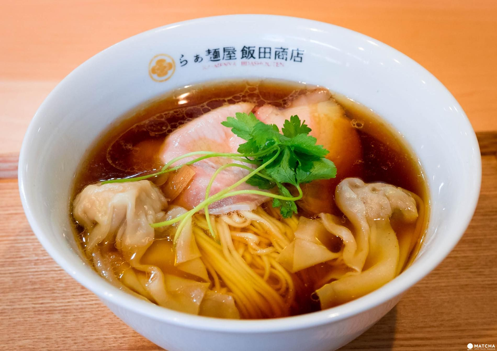
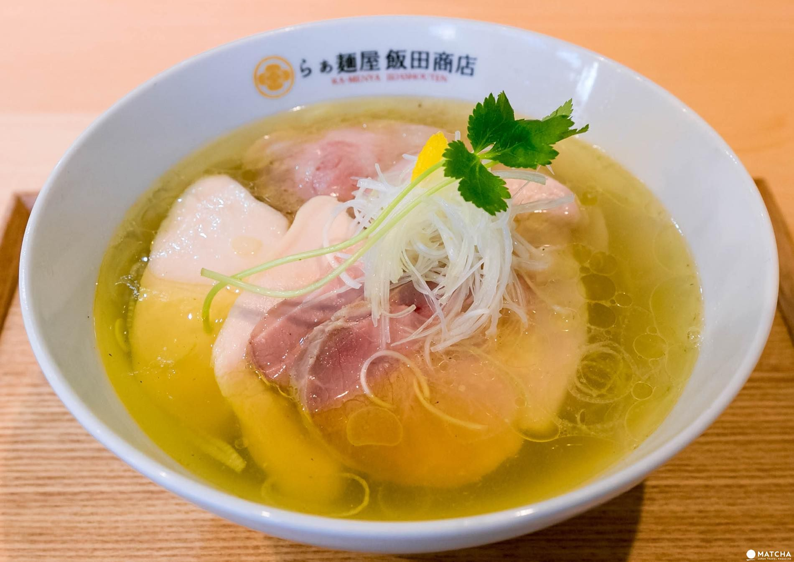
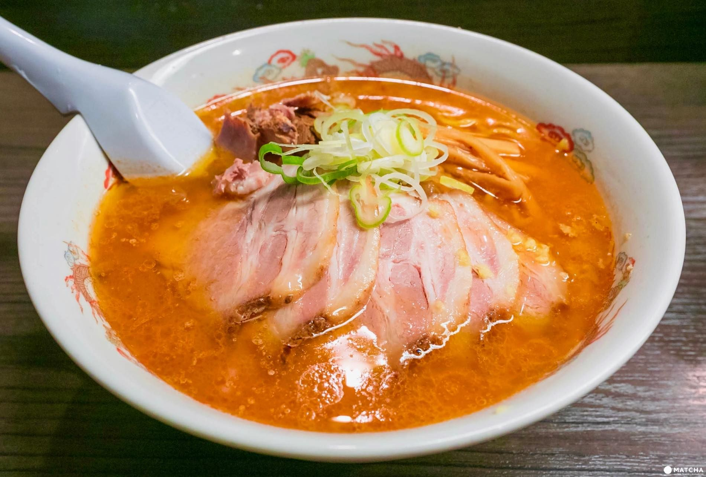
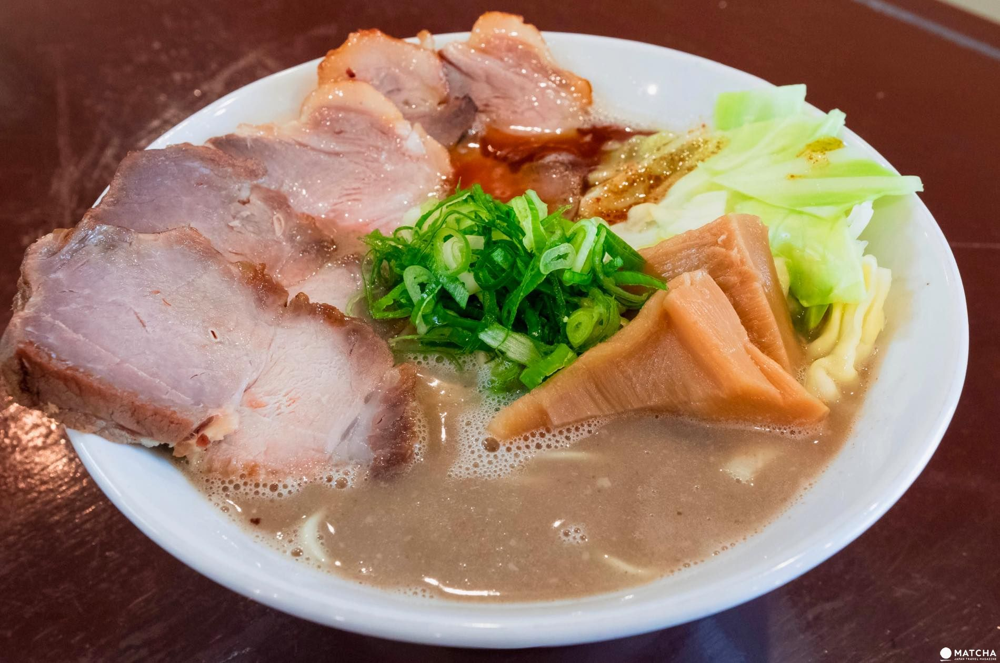
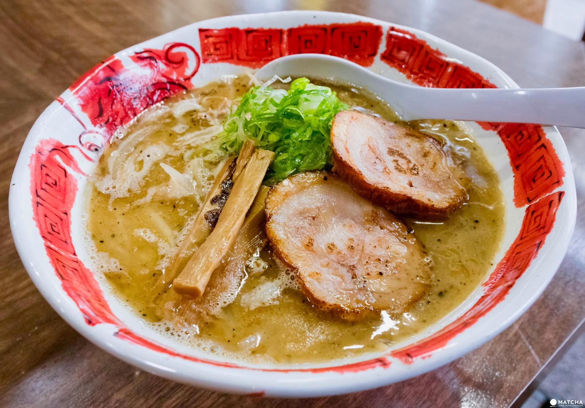
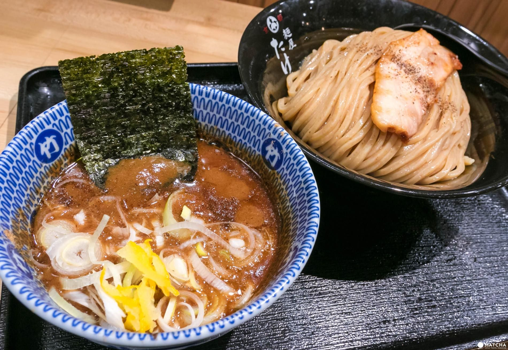
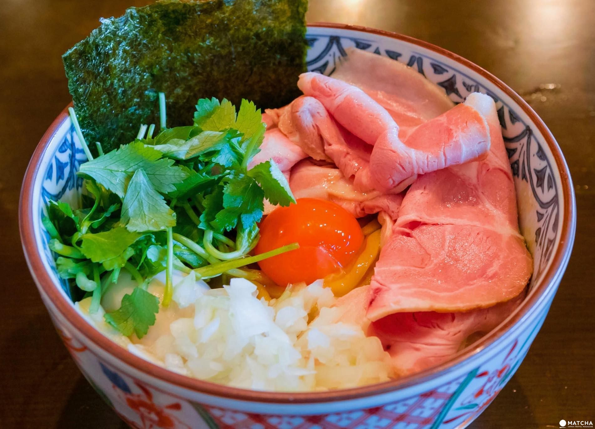

What comes to mind when thinking about Ramen ...
In Japan, apart from ramen, various type of cooking using noodles
such as udon or soba can be found. The big difference is that
Chinese noodles are used when cooking ramen. The Chinese noodles are
made using 'kansui', a special alkaline solution that will give a
different color, mouthfeel and flavor to the noodles. A few
restaurants are making their noodles without 'kansui', but generally
speaking noodles made without 'kansui' are classified in the udon
category in Japan.
In a nutshell, you can guess that the most important thing in Ramen
are the noodles. When thinking about ramen we always have a tendency
to think about the soup, but you should definitely pay attention to
the noodles' flavor when eating ramen.

Shoyu Ramen
The most common Ramen that you can eat in Japan is
Shoyu Ramen. It seems that the first ramen shop
in Asakusa, Tokyo was offering a shoyu ramen more than 100 years
ago.
Shoyu Ramen is made by mixing the dashi soup, extracted of pork
bones, chicken bones or seafood among others, with the
shoyu-based sauce. However, remember that there are many
varieties of shoyu and dashi soup depending on the ramen
restaurant or the region. That's why shoyu ramen has a wide
variety of flavors. And depending on which type of ramen noodles
you are mixing with the soup, the eating exprience can differ
big-time.

Shio Ramen
Generally speacking, shio ramen is a lightly
seasoned ramen soup using salt in its sauce. Because salt
doesn't have a color like shoyu or miso, the dashi soup can stay
transparent.
When comparing shio ramen to shoyu ramen or miso ramen, it is
easier to express the characteristics of each ingredients. It
is said that you can't cheat when making a shio ramen. Nowadays,
a lot of shio ramen have a robust flavor thanks to the generous
umami of their sauce and dashi soup.

Miso Ramen
There are not as much miso ramen restaurants as shoyu or shio
ramen restaurants, but Japanese are really familiar with miso
ramen. It is certainly due to the huge contribution of Hokkaido
Sapporo Miso ramen. By mixing miso, veggies and dashi soup in a
pot, the unique flavor of miso ramen can be expressed.

Tonkotsu Ramen
Tonkotsu ramen is widely known in Kyushu and its soup is made of pork bones. Simmering for a long time pork bones makes the soup generally cloudy.
Its thickness and taste vary according to the simmering time and the pork parts that are being used.
When making this type of ramen, thin noodles are used and because the noodles' quantity is relatively small, especially in Hakata - Fukuoka prefecture, Kyushu area - there are a lot
of restaurants who are offering second serving of only noodles. The use of garlic is also quite common in the tonkotsu ramen of every regions in Kyushu.

Toripaitan Ramen
The most common Ramen that you can eat in Japan is the
Shoyu Ramen. It seems that the first ramen shop
in Asakusa, Tokyo was offering a shoyu ramen more than 100 years
ago.
Shoyu Ramen is made by mixing the dashi soup, extracted of pork
bones, chicken bones or seafood among others, with the
shoyu-based sauce. However, remember that there are many
varieties of shoyu and dashi soup depending on the ramen
restaurant or the region. That's why shoyu ramen has a wide
variety of flavors. And depending on which type of ramen noodles
you are mixing with the soup, the eating exprience can differ
big-time.

Tsukemen
The most common Ramen that you can eat in Japan is
Shoyu Ramen. It seems that the first ramen shop
in Asakusa, Tokyo was offering a shoyu ramen more than 100 years
ago.
Shoyu Ramen is made by mixing the dashi soup, extracted of pork
bones, chicken bones or seafood among others, with the
shoyu-based sauce. However, remember that there are many
varieties of shoyu and dashi soup depending on the ramen
restaurant or the region. That's why shoyu ramen has a wide
variety of flavors. And depending on which type of ramen noodles
you are mixing with the soup, the eating exprience can differ
big-time.

Mazesoba
The most common Ramen that you can eat in Japan is the
Shoyu Ramen. It seems that the first ramen shop
in Asakusa, Tokyo was offering a shoyu ramen more than 100 years
ago.
Shoyu Ramen is made by mixing the dashi soup, extracted of pork
bones, chicken bones or seafood among others, with the
shoyu-based sauce. However, remember that there are many
varieties of shoyu and dashi soup depending on the ramen
restaurant or the region. That's why shoyu ramen has a wide
variety of flavors. And depending on which type of ramen noodles
you are mixing with the soup, the eating exprience can differ
big-time.
Red Five standing by. Leave that to me. Send a distress signal, and
inform the Senate that all on board were killed. I care. So, what do
you think of her, Han? What good is a reward if you ain't around to
use it? Besides, attacking that battle station ain't my idea of
courage. It's more like…suicide.
The Force is strong with this one. I have you now. All right. Well,
take care of yourself, Han. I guess that's what you're best at,
ain't it? A tremor in the Force. The last time I felt it was in the
presence of my old master.
Oh God, my uncle. How am I ever gonna explain this? I need your
help, Luke. She needs your help. I'm getting too old for this sort
of thing. He is here. The plans you refer to will soon be back in
our hands.
Partially, but it also obeys your commands. Hokey religions and
ancient weapons are no match for a good blaster at your side, kid. I
need your help, Luke. She needs your help. I'm getting too old for
this sort of thing.
I don't know what you're talking about. I am a member of the
Imperial Senate on a diplomatic mission to Alderaan-- Escape is not
his plan. I must face him, alone. Escape is not his plan. I must
face him, alone.
Obi-Wan is here. The Force is with him. Kid, I've flown from one
side of this galaxy to the other. I've seen a lot of strange stuff,
but I've never seen anything to make me believe there's one
all-powerful Force controlling everything. There's no mystical
energy field that controls my destiny. It's all a lot of simple
tricks and nonsense.
Donuts. Is there anything they can't do? Shoplifting is a victimless
crime. Like punching someone in the dark. Uh, no, you got the wrong
number. This is 9-1…2. Donuts. Is there anything they can't do?
Last night's "Itchy and Scratchy Show" was, without a doubt, the
worst episode *ever.* Rest assured, I was on the Internet within
minutes, registering my disgust throughout the world. Thank you,
steal again.
I prefer a vehicle that doesn't hurt Mother Earth. It's a go-cart,
powered by my own sense of self-satisfaction. Son, a woman is like a
beer. They smell good, they look good, you'd step over your own
mother just to get one! But you can't stop at one. You wanna drink
another woman!
I'm going to the back seat of my car, with the woman I love, and I
won't be back for ten minutes! Human contact: the final frontier.
And here I am using my own lungs like a sucker. I'll be back. You
can't keep the Democrats out of the White House forever, and when
they get in, I'm back on the streets, with all my criminal buddies.
I didn't get rich by signing checks. No children have ever meddled
with the Republican Party and lived to tell about it. "Thank the
Lord"? That sounded like a prayer. A prayer in a public school. God
has no place within these walls, just like facts don't have a place
within an organized religion.
No children have ever meddled with the Republican Party and lived to
tell about it. Your guilty consciences may make you vote Democratic,
but secretly you all yearn for a Republican president to lower
taxes, brutalize criminals, and rule you like a king!
Yes! I am a citizen! Now which way to the welfare office? I'm
kidding, I'm kidding. I work, I work. Don't kid yourself, Jimmy. If
a cow ever got the chance, he'd eat you and everyone you care about!
Human contact: the final frontier.
Pretend. You pretend the feelings are there, for the world, for the
people around you. Who knows? Maybe one day they will be. Like a
sloth. I can do that. Watching ice melt. This is fun. I think he's
got a crush on you, Dex!
Tonight's the night. And it's going to happen again and again. It
has to happen. You look…perfect. I'm really more an apartment
person. I'm a sociopath; there's not much he can do for me.
I'm Dexter, and I'm not sure what I am. Cops, another community I'm
not part of. I love Halloween. The one time of year when everyone
wears a mask … not just me. This man is a knight in shining armor.
Keep your mind limber. I'm partial to air conditioning. I will not
kill my sister. I will not kill my sister. I will not kill my
sister. I will not kill my sister. I will not kill my sister. I will
not kill my sister.
Finding a needle in a haystack isn't hard when every straw is
computerized. I'm partial to air conditioning. I like seafood. I
feel like a jigsaw puzzle missing a piece. And I'm not even sure
what the picture should be.
I'm generally confused most of the time. I'm Dexter, and I'm not
sure what I am. I am not a killer. I'm doing mental jumping jacks. I
feel like a jigsaw puzzle missing a piece. And I'm not even sure
what the picture should be.
Watching ice melt. This is fun. Tell him time is of the essence. I'm
really more an apartment person. I'm real proud of you for coming,
bro. I know you hate funerals. I am not a killer. Somehow, I doubt
that. You have a good heart, Dexter.
Sorry, checking all the water in this area; there's an escaped fish.
The way I see it, every life is a pile of good things and bad
things.…hey.…the good things don't always soften the bad things; but
vice-versa the bad things don't necessarily spoil the good things
and make them unimportant.
The way I see it, every life is a pile of good things and bad
things.…hey.…the good things don't always soften the bad things; but
vice-versa the bad things don't necessarily spoil the good things
and make them unimportant. Stop talking, brain thinking. Hush.
You've swallowed a planet! It's a fez. I wear a fez now. Fezes are
cool. I hate yogurt. It's just stuff with bits in. All I've got to
do is pass as an ordinary human being. Simple. What could possibly
go wrong?
They're not aliens, they're Earth…liens! You've swallowed a planet!
Saving the world with meals on wheels. I am the Doctor, and you are
the Daleks! I am the Doctor, and you are the Daleks!
I'm the Doctor, I'm worse than everyone's aunt. *catches himself*
And that is not how I'm introducing myself. I'm the Doctor. Well,
they call me the Doctor. I don't know why. I call me the Doctor too.
I still don't know why.